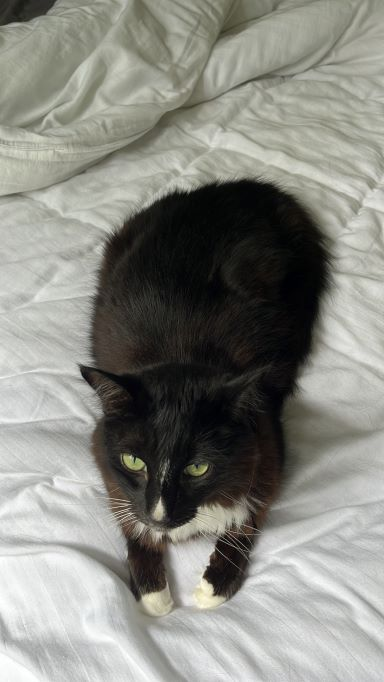

Chapo's fan club
Chapo 😼 was born in 2016 and has graced the lives of everyone around him since.
Chapo is a longhaired tuxedo cat that lives in Cairns, Australia.

Chapo's least favorite people in order:
- Rhys Anderson
- Betty (Cat)
- Lachlan Griffin
- Adrian Griffin
Chapo's favorite people in order:
- Sophie Griffin
- Jack Hall
- Jane Griffin
- Sam Mildren
- Michel Carr